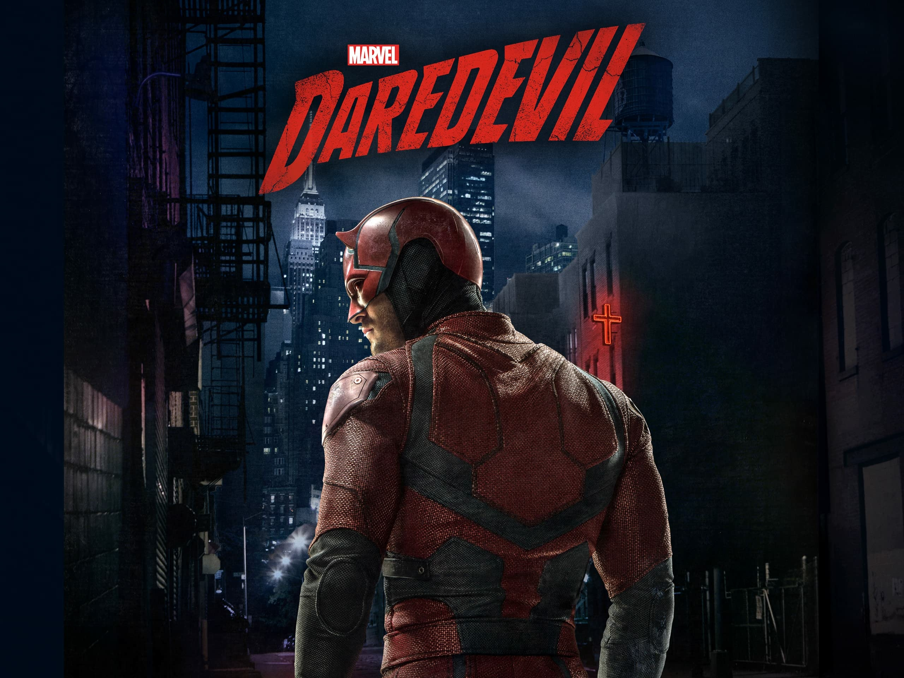

Daredevil, es una serie de televisión estadounidense creada por Drew Goddard para el servicio de streaming, Netflix, basada en el personaje de Marvel Comics, Daredevil. Está ambientada en el Universo cinematográfico de Marvel, compartiendo continuidad con las películas de la franquicia, y fue la primera serie de Netflix que condujo a la miniserie cruzada, The Defenders (2017)

| Titulo | Año de salida | Protagonista |
|---|---|---|
| Dardevil | 2015 | Matt murdock |